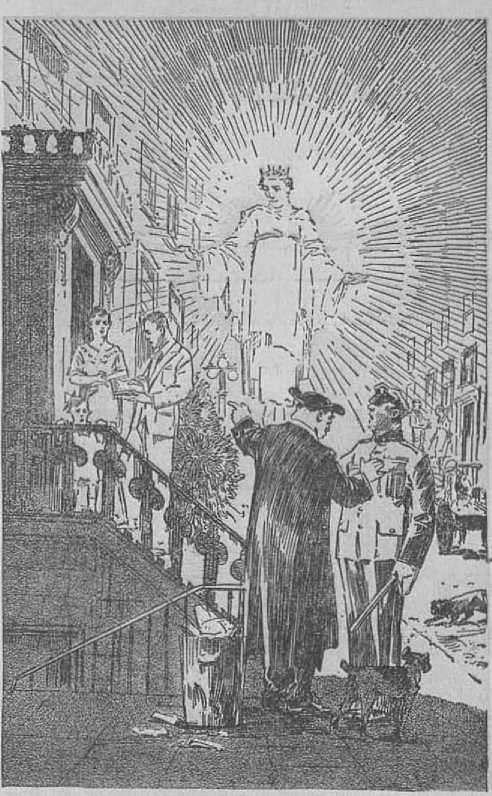
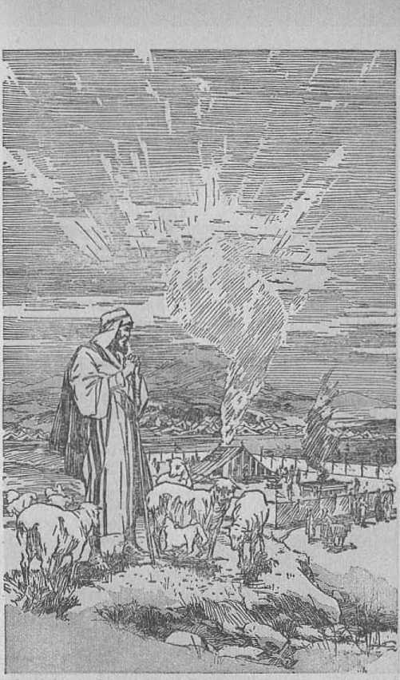

explained in
Five Bible Treatises
by
J. F. RUTHERFORD
Page
3 World Recovery?
22 Commerce
30 Bible Questions Answered
38 The Tabernacle
47 His Organization
His lectures heard regularly over hundreds of radio statious, and his writings already distributed to the extent of more than 160,000,000 copies in sixty languages 1
This record is enough to commend to the reader the Scriptural presentatious of Judge Rutherford in this booklet.
Copyrighted 1934 and Published by WATCH TOWER BIBLE AND TRACT SOCIETY International Bible Students Association Brooklyn, N. Y., U. S. A.
Made in the United States of America
Branch Offices:
London, Magdeburg, Paris, Toronto, Strathfield, Cape Town, Berne, Copenhagen, Stockholm, and other cities.
(Broadcast over chain by Judge Rutherford November 12, 1933)
THE northern portion of the earth is now entering into winter, and the prospects are that it will be a hard winter. It will be hard enough for those who are better situated, but it will be extremely distressing to those who are without employment, food and shelter. During the past few years conditions have continued to grow worse, until today many persons who formerly had a home and a reasonable income no longer enjoy such blessings. Many people of refinement and education are now compelled to peddle small articles, and even to beg, in order to get food. In every nation the powers that rule are putting forth their best endeavors to recover the world and to bring in prosperity. The question is now being propounded by many: Can the world be recovered, and, if so, how?
I am not a pessimist nor an alarmist. I have no inclination to retard the work of anyone who is trying to accomplish good for the people. It would be worse than folly, however, for me and others to close our eyes and ears to the real facts now well known and to try to drive away the unhappy conditions by saying, ‘Everything
will be all right soon.’ It is far better for us to now face the facts, learn the cause of this condition, and then take the course that will best safeguard our interests. For this reason, and with malice toward none, I hope to employ speech here that can be understood and by it you may gain some good.
When the World War ceased almost everybody hoped that there would never be another war. The people had been told that the war would make the world safe for democracy, and with some degree of hope they looked forward to the time when the people might be free from oppression and dwell in safety and enjoy the fruits of their honest labors. The prohibition of intoxicating liquor had been made a part of the fundamental law, and many good people hoped that crime would now decrease; and after more than a decade of experience crime has greatly increased. Now prohibition is dead by reason of a vote of the people, and many good people now hope that conditions will get better and that crime will be less. Again the people will fail to realize such hope. The Devil caused prohibition to be enacted into a law in his effort to turn people away from the true God and His kingdom and into selfish worldly organizations. The same power has induced the repeal of the prohibition law, and for the same purpose. Distress and crime will continue to increase until the great climax is reached at Armageddon.
Some few years ago the great economic depression came upon the nations, particularly of “Christendom"’’, and conditions have continued to grow from bad to worse. Today the peoples of all nations find themselves in great distress and the ruling powers are in deep perplexity as to just what they can do to alleviate the sufferings of the people. Now the reason for this condition of suffering is well known, and a knowledge and understanding thereof is in the reach of every person who wants to learn. My purpose is to endeavor to help the people gain a knowledge of the real facts, that each one may determine for himself what course he wishes to take.
Being dissatisfied with existing conditions men of high ideals have come forward with various proposed remedies; hut up to the present day none of these worldly remedies have succeeded. None of them will succeed. Doubtless every one who devises and promulgates a scheme of recovery thinks his scheme is the best; otherwise he would not make mention of it. Russia, suffering long under the hand of oppression, broke down the old barriers and set up a soviet government, expecting and hoping to thereby rule, control and bless the world. Their scheme of government has not succeeded and will not succeed.
Next came Italy, with her vigorous political leader Mussolini, who brought forward a scheme of government with a hope of bettering the world, and now, according to the public press, he announces that it is his ambition to recover the world. Many people have pinned their faith to his scheme, while many others have not.
Hitler, of Germany, gets a scheme into his mind and brings it forth with the avowed purpose of controlling the world and to refine it. Few people outside of Germany believe in him. His scheme will never succeed, regardless of how good his intentions may be.
With the incoming of the present administration of the American government a new deal was announced. The president and his official family have worked hard to better the economic conditions. There is no reason for questioning their good intentions, and that is not my purpose, of course. The National Recovery Act is the chief means or scheme employed for the world recovery, but up to this time it has not succeeded. It will not succeed in recovering the world, but, on the contrary, is destined to a dismal failure. If you calmly hear why this and other schemes for world recovery are certain to fail, then you will know that my only purpose in making this statement is that the people may have the facts and be forewarned and be enabled to choose which side they wish to take. It is useless to build a hope on an uustable thing.
In the early part of the year 1933 the so-called "Holy Year” scheme was announced as a means of recovering the world. This scheme developed with the Catholic hierarchy, and many good people were induced to believe that the scheme would help, but now sober-minded people can well see that the so-called “Holy Year” scheme is a false alarm. Now comes to the front the Catholic press, making claim that the pope is the real author of the National Recovery scheme. As a sample of such claims I quote from one of these papers, as follows, to wit: “For years the warnings of the pontiffs have gone unheeded and the economic situation has become progressively worse. But there has come at last a political leader with the vision and the courage to accept the teaching of the popes and to apply the remedies which they suggest. The industrial revolution now going on in the United States under the leadership of President Roosevelt is based upon the ideas and principles set forth in the papal encyclicals. . . . It is, however, the first attempt by the government of a world power to follow the moral leadership of the popes. As such it merits the sympathy and prayers of Catholics. The world is anxiously watching and there is serious talk of adopting similar legislation in Canada and England.” (Catholic Opinion, October, 1933)
Whether the claim that the pope is the author of the National Recovery Act is true or not I don’t know; but one thing I do know, that if he is the author of it that is one of the good reasous why the scheme is certain to fail. There are millious of good people who have been identified with the Roman Catholic church system who are now seeing that the Papal hierarchy is the most tremendous fraud that has ever been practiced upon the peoples of earth. Falsely and fraudulently it claims the sole right to interpret the Holy Scriptures, whereas Jehovah God and Christ Jesus are the only interpreters.
The following appears in the St. Lucia Catholic Magazine of October, 1933: “The Catholic Church alone has the right to teach Christ’s doctrine to the world. She alone has the right to explain the Bible.” If that statement were true, then lot Protestants take notice that they have no right either to teach or to exist. The claim, however, is entirely false and in keeping with many other false claims that deceive the people.
Falsely and fraudulently the Catholic hierarchy claims that the pope is a successor of the apostle Peter, whereas the Scriptures show there are no successors to the apostles. It has caused the people to believe that their beloved dead are in “purgatory”, and the priests of this hierarchy have collected enormous sums of money from the people upon the false and fraudulent claim that they can by their prayers shorten the duration of punishment in “purgatory”. Posing as teachers and representatives of God and Christ on earth the Papal hierarchy promoters have dabbled in the political affairs of every nation of earth, which conduct God condemus in no uncertain terms. (James 1: 27) The days of the Catholic hierarchy are numbered. The divine judgment of condemnation is written in the Word of God against it, and every recovery scheme endorsed by it is certain to fail.
Now I beseech you to calmly hear the proof conclusive that all such schemes must fail. In order to understand what world recovery means we must first understand what is mcant by the term world. The nations of the earth constitute the visible part of the world; but that visible part is under the supervision of an invisible power or overlord. In the Scriptures the word heaven is frequently used in a symbolic manner as representing the invisible part of the world, whereas the word earth is used to represent or symbolically stand for the visible part, and such, that is to say, heaven and earth together, constitute the world. Men have organized these visible governments on earth, but there has been and is an invisible power that is really controlling them. The visible ruling powers are composed of commercial, political and religious elements, and these joined together have been directed and controlled by the invisible power; and together they constitute the world which rules and controls the people. Jesus said: “My kingdom is not of this world” (John 18:36); and that statement alone is proof that God and Christ Jesus are no part of the invisible ruling powers that operate this wicked world. Then Jesus said that Satan the Devil is the god or invisible ruler of this world. (John 12: 31; 14: 30) The apostle Paul supports this statement, in 2 Corinthians 4: 3-6, to the effect that the Devil, the god or invisible ruler of this world, blinds the people and turus them away from Jehovah. There is a host of wicked angels that operate with Satan to rule the peoples of the world, and all these wicked ones fight against every true follower of Christ Jesus. The fact that the Roman Catholic hierarchy coustantly and cruelly persecutes Jehovah’s witnesses merely because they are telling the truth to the people of and concerning God’s Word is proof that the Catholic hierarchy is the servant of the Devil and a part of his organization. Concerning these the the apostle Paul, in Ephesians 6:12, wrote under inspiration : “We [the true followers of Christ] wrestle not against flesh and blood, but against principalities, against powers, against the rulers of the darkness of this world, against spiritual wickedness in high places.”
How did Satan become the god or invisible ruler of this world? The Scriptures and the facts show that he rebelled against Jehovah the true God, set up an opposing organization, and claimed that he could turn all men away from the true God. From the beginning his organization consisted of commercial, political and religious elements, and by these he has carried on the visible rulership of the nations of the earth.
In order to have a people for His name Jehovah God selected the Israelites, separated them from the other nations, and commanded that they should worship him as the true God and should keep themselves free from the false god Satan. (Exodus 20:1-5) The Israelites failed to keep their covenant with Jehovah, fell away from him and followed the Devil’s agents, and in the year 606 B.C, Jehovah God completely cast that nation away. At that time he said to Israel’s king: “And thou, profane wicked prince of Israel, whose day is come, when iniquity shall have an end, thus saith the Lord God, Remove the diadem, and take off the crown; this shall not be the same; exalt him that is low, and abase him that is high. I will overturn, overturn, overturn it; and it shall be no more, until he come whose right it is; and I will give it him.” (Ezekiel 21: 25-27) There Satan became the invisible ruler of all the nations of earth and God declared that he would not interfere until the time when he would send his beloved Son Jesus, who is earth’s rightful Ruler, and to him the rule should be given.
Jehovah declared that the period of time from the overthrow of King Zedekiah until the coming of Christ Jesus, the rightful Ruler, would be a period of 2,520 years. That period of time beginning in 606 B.C. necessarily would end in 1914, which marks the date for the coming of earth’s rightful Ruler. The question was put to Jesus as to how it would be known when lie would take his power and reign, and his answer to that question was that the time would be marked by the beginning of a world war; and exactly on time, to wit, in 1914, the world war began, (Matthew 24: 3-8) This is corroborated by the words written in Revelation, to wit, 'We thank thee, Almighty God, because thou hast taken thy power and reigned; and the nations were angry.’ (Revelation 11:17,18) All the facts show that the autumn season of 1914 marks the coming of the Lord Jesus and the taking of his regal power.
If Jesus became earth’s rightful ruler in 1914, why does the wicked Satan continue his rule of the nations? Let me answer that question by an illustration. The Coustitution of the United States provides that public officials begin to exercise their office in March, but that the election must be held in November previous. It is known in November who will rule, but the ones then in power continue until March following, Jesus was placed on his throne in heaven, as the prophecy shows, in 1914, when he was commanded to go forth and rule amidst his enemies. (Psalm 2:6; 110:1, 2) The first work of Jesus was to cast Satan out of heaven. Cast down to earth Satan continued to exercise the office of invisible ruler of this wicked world; and this must continue until Armageddon, at which time his organization will be completely destroyed. Jehovah has fixed the day for the final overthrow of the wicked ruler of this world, and nothing can prevent that overthrow.
What should we expect to take place following the World War and the casting of Satan out of heaven? Jesus answered that question, that there would follow a time of great distress of the nations, with perplexity; . . . men’s hearts failing them for fear and for looking after those things coming on the earth. (Luke 21: 25, 26) Such is exactly the condition we now see and which facts constitute an interpretation and fulfilment of the prophecy uttered by the Lord Jesus. Today the leaders of the nations are in such perplexity that none of them know what to do; hence each one is trying some experimental scheme. Without a doubt their desires and intentions are good; but that is no reason why their schemes can possibly succeed. Armageddon is just ahead, and is certain to come on time, and there is nothing that can stop it; and there God will wipe out the present world.
What is God’s purpose in permitting the Devil to continue till Armageddon as invisible overlord of the nations? The answer to that question is of great importance to the people just now. The Catholic hierarchy will try to prevent you from getting the true answer. The Scriptural and therefore true answer is that Jehovah God has visited the nations and taken out from them "a people for his name”, and these he has made witnesses and commanded them to go out amongst the people and inform them in advance of what he purposes to do. He has given the people, as well as the rulers, an opportunity to choose which side they will take, either the side of the Devil or the side of Jehovah God.—Acts 15:14; Isaiah 43: 9-12.
The fact that earth’s rightful ruler has come is good news, or gospel, to all who believe it. The coming of the King was marked by the World War, famine, pestilence, revolutious, and now by great distress and perplexity. These times of suffering do not constitute good news. Then why have they come? Jesus answers, Because Satan the Devil has come down to earth and, knowing that his time is short before the final battle, he brings all possible trouble upon the people in order to turn them away from the true God. (Revelation 12:12) The good news or gospel consists in the fact that earth’s rightful Ruler has come and soon the sufferings of mankind shall end and a righteous government shall be the comfort and joy of the people. Therefore the Lord gives commandment to his faithful witnesses, to wit: “This gospel of the kingdom shall be preached in all the world for a witness unto all nations; and then shall the end come.”—Matthew 24:14.
In full obedience to this commandment Jehovah’s witnesses now go out and tell the people the good news that Christ is King, that His kingdom is here. Of course, the Devil and his earthly representatives oppose Jehovah’s witnesses in doing this witness work. As it is written that the testimony of Jesus Christ is committed to them, and because they obey the Lord’s commandments, the Devil is extremely mad and tries to destroy Jehovah’s witnesses. (Revelation 12:17) That is the reason why the Catholic hierarchy, the chief earthly representative of the Devil, persistently and continually lies about Jehovah’s witnesses, persecutes them, and causes their arrest and imprisonment on false charges. A striking sample of this persecution of Jehovah’s witnesses by Satan’s representatives is that found in parts of the state of New Jersey today. The people who support these persecutious thereby take their stand on the side of the Devil; and those who are considerate and kind to Jehovah’s witnesses because these are witnesses of the Lord thereby take their stand on the side of Jehovah God. Thus the people are being divided.
What will follow the completion of this witness work? Jesus answers that when this work is done there shall follow upon the nations the greatest tribulation that has ever been known, and that it will he the last, because it will completely wreck the Devil’s organization, including the false religious systems that have so long deceived the people. That being true (and it is true), we know that the recovery of this world is an impossibility. So-called “Holy Year” schemes and other schemes are certain to fail.
Note now some more Scriptural proof, recorded at 2 Peter the third chapter. First is here described the destruction of the old world "by the flood, and then the scripture is directed to the wicked world existing since the flood. The apostle uses the word heaveus symbolically as representing the invisible rule of Satan, because Satan and his angels are invisible to human eyes. He speaks of the visible rulers under the symbol of earth. The nations of the earth, particularly “Christendom”, are involved, and upon these the day of Jehovah comes quietly and stealthily, like a thief, because the rulers all refuse to hear the Word of God; therefore says the apostle Peter: “But the day of the Lord will come as a thief in the night; in the which the heaveus shall pass away with a great noise, and the elements shall melt with fervent heat; the earth also, and the works that are therein, shall be burned up.” (3:10) This scripture is conclusive proof that the world cannot be recovered but must be and will be completely and for ever destroyed, for the reason that the final decree of Jehovah God against it is written and the time approaches when his great executive officer Christ Jesus will execute that decree. (Zechariah 14:3, 12, 13) The testimony of
This Kingdom Gospel Shall Be Preached Page 14
truth commanded by the true God must now be given to the people that they may know that Jehovah is God, that Christ is King, and that the people must choose to follow either the Devil and his false religious teachers and suffer destruction, or take their stand on the side of Jehovah and his kingdom and live.—Matthew 25: 31-46.
But would any honest person, after understanding the facts, desire that the old world should be recovered? Surely not; because the peoples of the nations are sick and tired of j wickedness and oppression, poverty and sickness, such as has predominated and still predominates in this world. Is there hope for the nations? Yes, and that hope is in the kingdom of God under Christ. Jehovah says: ‘'Behold my servant, whom I have chosen; my beloved, in whom my soul is well pleased: I will put my spirit upon him, and he shall declare judgment to the nations. And in his name shall the nations hope.”—Matthew 12:18, 21, A.R.V., margin.
In corroboration of this, the apostle Peter under inspiration wrote; “Nevertheless we, according to his promise, look for new heaveus and a new earth, wherein dwelleth righteousness.” (2 Peter 3:13) The “new heaveus” here described is the invisible government under Christ, whose rule in righteousness will bless the nations and peoples of the earth that obey him. The "new earth'’ is the visible part of God’s organization on earth composed of righteous men who will act in complete obedience to and under the supervision and direction of Christ, earth’s rightful ruler.
Jehovah’s provision is not the recovery of the old world, but the regeneration or making a new world under Christ. (Matthew 19: 28) He made the earth for man, and the obedient ones will inherit the earth. (Isaiah 45:12,18) The blood of Christ purchased the right for man to live, and those who obey him will receive the gift of life. (Romans 6:23; 5:18) World recovery would not better the nations, because they would still be under the Devil’s power. The blessings of life and everything desirable can come only through the new world under Christ, the invisible Ruler. Therefore, when the people learn the truth, they do not want the old world to be recovered. They want a righteous world, in which there will be no more war, poverty and suffering. The Scriptures liken the present wicked world to an old worn-out garment, and Jesus declares you cannot patch the old with a new. —Isaiah 51: 6; Matthew 9:16.
The political leaders have been misled by the ecclesiastics, and their only way to succeed now in doing real good to the people is to sever connection with the ecclesiastical leaders, who form a part of this unhappy world, and to act under the Lord’s leadership. No man on earth is an-thorized to be a leader and teacher of the people in matters pertaining to God’s purposes. He has appointed Christ Jesus to that place, as it is written: “Behold, I have given him for a witness to the people, a leader and commander to the people.” (Isaiah 55: 4) In his world he will make the earth a blessed place to live.—Isaiah 66:1; 60:13.
Satan and his earthly agents do everything within their power to prevent the people from now hearing these precious truths from God’s Word. Therefore, when you see an effort being made by anyone to stop the proclamation of the message of God’s kingdom under Christ you may know for a certainty that such opposition comes from the Devil. You will then take your stand either on the side of the Devil or on the side of Jehovah God and his government. The old world, now sick unto death, can never bring you real blessings. The new world, just beginning, under Christ, will soon wipe out the present wicked world, and then the blessings of peace, happiness and life will be here to stay. For this reason Jesus taught his followers to pray to Jehovah: ‘Thy kingdom come; thy will be done, on earth as it is in heaven.’ That prayer is now about to be fully answered. Any relief that now comes from worldly schemes will be merely temporary. Only the new world under Christ will bring the desire of all who want to do right.
The complete destruction of the wicked world does not mean the destruction of the earth, because “the earth abideth for ever” and will be the everlasting home of all men who love and serve Jehovah God. The “new world” means the new government of the people on earth; but that government will be a righteous one, because the great invisible Ruler is righteous and his representatives will deal justly at all times. (Isaiah 32:1) Jehovah’s promises are always fully performed. Long ago he promised that in his due time he would set up a righteous government, or new world, and that such government shall rest upon the shoulder of his beloved Son Christ Jesus. Under the new world all nations shall have an opportunity for his blessing. (Isaiah 9: 6, 7; Genesis 22:18; Psalm 72:17) The people who now learn the truth and appreciate it do not oppose Jehovah’s witnesses. It is only those who are under the blinding influence of Satan that attempt to prevent the truth from being told. Those who are now permitted to be witnesses for Jehovah and to inform the people of his gracious provision arc greatly favored. Let all who love righteousness rejoice that the day of deliverance is at hand and for the manifold blessings now had and yet to be had by those who love God. Let all praise bo given to Christ and to Jehovah, the true and Almighty God.—Psalm 67: 3-6.
THE MODERN meaning of commerce is trafficking in the products or things of the world for personal gain. Buying and selling of goods, wares and merchandise is not wrong within itself, but in order to be right it must be done honestly. The law of God makes the buying and selling legitimate and right when conducted in a fair and honest way. It is pleasing to God that you be liberal with your neighbor in your dealings with him. Jesus stated the correct rule when he said (Luke 6:38), '‘Give, and it shall be given unto you; good measure, pressed down, and shaken together, and running over, shall men give into your bosom. For with the same measure that ye mete withal, it shall be measured to you again.” This rule is not followed in the commerce amongst the peoples of the world. On the contrary, men who control the money fix the price of the produce of earth and cause the poor to sell to them in order that such selfish men may gain greater wealth and power. .
At 1 Timothy 6:10 it is written: "The love of money is the root of all evil.” That does not mean that it is wrong to have money; but when man makes money his god and attempts to acquire it by all means, foul or fair, he is led into 22 a snare to his own downfall. Why should it be said that the love of money is the root of all evil? Because commerce originated with Satan the Devil and out from that wicked one has grown all wickedness of the world. Jehovah’s final decree or judgment against Satan is found in the twenty-eighth chapter of Ezekiel’s prophecy, the sixteenth and eighteenth verses of which say: “By the multitude of thy merchandise they have filled the midst of thee with violence, and thou hast sinned; therefore I will cast thee as profane out of the mountain of God: and I will destroy thee, 0 covering cherub, from the midst of the stones of fire. Thou hast defiled thy sanctuaries by the multitude of thine iniquities, by the iniquity o f thy traffic.”
Lucifer, now called Satan, knew that Jehovah God had given commandment that Adam and Eve should multiply and fill the earth even as the waters fill the sea. The Devil foresaw a vast earthly sea composed of human creatures, which would flow from this perfect man and woman and fill the earth. He had a selfish ambitious desire to control that human “sea” and to control "what they could bring out of it. When the human race had increased to multitudes, then the Devil had alienated them from God, and out of that symbolic sea he brought forth a beastly thing, to wit, the commercial power, by which he has greatly oppressed and kept in subjection the human race.
His love for commercial or money power that would result in control of the human race is the beginning or root of all evil- lien who have followed in his course have ever found it so.
In the thirteenth chapter of The Revelation it is written that the revelator stood upon the sand of the sea and saw rise up out of the sea a hideous beast with seven heads and ten horus bearing the name of blasphemy. The Revelation is written in symbolic language, and the meaning of sea as there used is this, to wit: The peoples of earth that are alienated from God, and who are therefore ungodly, and who are used to mother, nourish, bear up and support Satan’s powerful organization. Satan first turned the people away from God and then used them to organize the most cruel and oppressive part of his organization, known as commerce, and by which he has controlled and oppressed the mass of mankind. This he has done by enriching a few. Note that God’s Word says concerning Satan and his commercial transactions: "They have filled the midst of thee with violence.” In other words, commerce has always been attended by violence.
Satan began his commercial operations by violence. He deliberately led Adam and Eve into death. He incited Cain to murder his brother. In Noah’s time Satan had so debauched angels and men and filled the earth with violence that God destroyed the world that then was. Satan has caused numerous wars between nations, and the violent death of millions of people, merely to gratify the ambitious commercial desire of his agents. Take away all possible commercial gain that would result from wars, and there is no likelihood that there would ever be a war amongst nations. Almost all wars have been wars of conquest, that is to say, for commercial gain.
The seventh world power controls the commerce of the earth today. This world power God illustrates by ancient Tyre, which nation employed a navy to carry on its unrighteous commercial enterprises. The mighty navies of earth today are maintained because of the commercial greed of men begun by Satan and carried,forward by his earthly agents since.
The fact that Jehovah gives so much attention in his Word to commerce and its detrimental result is proof conclusive of its power for wrongdoing and of its operation in wickedness. Men who are wholly given over to the gain of money have no cousideration for their fellow man. These are described by the prophet, in the seventy-third Psalm, in these words: "Therefore pride compasseth them about as a chain; violence coveroth them as a garment. Their eyes stand out with fatness: they have more than heart could wish. They are corrupt, and speak wickedly concerning oppression: they speak loftily. They set their mouth against the heavens; and their tongue walketh through the earth. . . . Behold, these are the ungodly, who prosper in the world; they increase in riches." There could not be a more accurate description of the few men who control the traffic of the sea and the land than the prophet here gives. Jehovah’s prophet Micah (6:12) says: “For the rich men thereof are full of violence, and the inhabitants thereof have spoken lies, and their tongue is deceitful in their mouth."
These mighty and rich men not only have the chief favor of the worldly governments and control the money and products of the people, but they are also made the chief ones and occupy the prominent positious in the church or religious organizatious. For this reason Jehovah’s prophet designates them as “the principal of the flock". They have no faith in God and no regard for his name nor for the rights of men.
The big men who control the traffic and the money of the world are the proudest and most haughty that live on the earth. They are the rulers of the people, and exercise the power behind all visible rulers. In the eyes of the people these big men appear to have all the favor and protection, and concerning this condition God foretold in the words of his prophet Malachi as follows (3:15): “And now we call the proud happy; yea, they that work wickedness arc set up; yea, they that tempt God are even delivered." Let no one understand that what is here said about commerce is intended to incite the people to violence against commercial power. Violence on the part of the people could accomplish nothing against the commercial power of the world. Such is Satan’s strong arm; and only God, by his Executioner Christ Jesus, can bring about the downfall of this oppressive power. Satan has planted selfishness in the heart of man and has led such men into the ways of commercial wickedness, which God denounces in strong terms when he caused to be written (James 5: 1-4): “Go to now, ye rich men, weep and howl for your miseries that shall come upon you. Your riches are corrupted, and your garments are moth-eaten. Your gold and silver [arc] cankered; and the rust of them shall be a witness against you, and shall eat your flesh as it were fire. Ye have heaped treasure together for the last days. Behold, the hire of the labourers who have reaped down your fields, which is of you kept back by fraud, crieth; and the cries of them which have reaped are entered into the ears of the Lord of Sabaoth,”
Jehovah will make a clcan-up of that which has brought the great curse and suffering upon mankind. The God of battle will make a complete wreck of commercial power. The farmer grows his crop and the commercial interests fix the price thereof and the farmer suffers great injustice and finds no relief. The farmers organize and attempt to better their condition, but
find themselves powerless so to do. God’s kingdom under Christ is the only hope for relief. The commercial giants and the power exercised by them have been a terror to mankind, and concerning which Jehovah by his prophet Ezekiel says (26: 21): "I will make thee a terror, and thou shalt be no more; though thou be sought for, yet shalt thou never be found again, saith the Lord God.”
At Armageddon Satan’s entire organization, including all commercial power, will be completely destroyed by the Lord. Thereafter the people will engage in legitimate trade. Thus Jehovah God will bring to the people complete relief. Under the reign of Christ there will never be another commercial power, and the man of Big Business will then have an opportunity to learn the way of righteousness, and if he obeys the righteous laws of God's kingdom he will learn the way to peace, prosperity and life. The words of the Scriptures are directed against the oppressive systems and powers organized and carried forward by Satan and his agents. These oppressive powers, the Scriptures declare, must disappear from the earth and the people must learn to do right toward their fellow man.
The oppressed people of the world will find no relief in the organization of leagues, lodges, legious or like organizatious. Why, then, follow the vain and abortive schemes of imperfect men | to try to find relief and comfort? The Word of
God is sure and true. It explaius fully why these oppressive conditious and suffering now exist and what is the only possible relief. Why not learn the truth and find relief? In the exercise of his loving-kindness Jehovah now sends forth his witnesses to bring to the attention of the people his good news or gospel of and concerning himself and his kingdom. These witnesses bring to your doors the message of truth in book form, that you may know where to find the proof. You have a Bible and you should know what it says, and what is the meaning thereof. Jehovah’s time has come for his Word to lie understood by everyoue who has an honest heart and a sincere desire to understand.
Commerce has made most men selfish because almost everyoue has a desire to acquire wealth. Let the people cease from the pursuit of unjust and selfish gain and devote themselves to the ways of righteousness and to the gaining of a knowledge of God’s marvelous provision for the blessing of the peoples of earth. So doing, they will find that peace of mind that passes all understanding of this world. They will know that Jehovah is the only true God and that he is the Savior and the Friend of the people and that his kingdom will bring the desire of every honest heart.
The big newspapers would be a splendid means or channel to get the truth to the people if they would only publish the truth. Big Business controls these papers, and they cooperate with the clergy in refusing to publish the truth of and concerning God’s kingdom, which the people so much need now. But the power of Jehovah is not shortened. In his own good way he sends forth his faithful witnesses to tell the people and to furnish them a printed explanation of bis Word. His time is now here when he commands that the testimony of the kingdom must be given, that all may know that Jehovah is the only true God.
Many of the radio audience have propounded Bible Questions and requested answer thereto. Some of these will now he answered from the Bible. Please make note of the texts cited, and afterwards read these texts, that you may confirm the answer.
Question : What constitutes a Christian, and ■what must a man do in order to become a Christian ?
Answer: A Christian is one who is accepted and counted by the Lord as a member of the body of Christ. The word Christ means anointed. Jesus was anointed by Jehovah with his spirit and commissioned to do a specific work that God marked out for him to do. Every one, therefore, who is really a Christian must receive the
BIBLE QUESTIONS ANSWERED 31 anointing of God’s spirit, which means that God puts his spirit upon such and commissions him to represent Jehovah God.
One becomes a Christian by following the course marked out by the Bible. First, he must have faith, because without faith it is impossible to please God. In Hebrews eleven it is written that he who comes to God must believe that God exists and that He is the rewarder of them that diligently seek Him. In order to have faith he must have some knowledge, because faith means to have knowledge of God and then to confidently rely upon such truths. All men are born sinners, not because of their own fault, but by reason of the fact that Adam sinned and from him all the human race inherited the results. Being imperfect they are naturally alienated from God. To 'come to God’ means to be brought into harmony with him.
In John fourteen Jesus said: 'No man can come unto the Father except by me. I am the way, the truth, and the life.’ That means that a man must first learn what Jesus has done for him. The Scriptures show that God sent Jesus to the earth, made him a man, and that he died iustead of the condemned sinner, and as a substitute for the sinner. That is what is called the “ransom sacrifice”, because ransom means to buy back. Then God provided that those who believe this to be true may receive the benefit of that ransom sacrifice. Exercising faith in God, and in the value of the shed blood of Jesus Christ as the redemptive price, a man then devotes himself to God by voluntarily agreeing
to do God’s will. In Matthew 16: 24 Jesus says : “If any man will come after me, let him deny himself, and take up his cross, and follow me.” Such self-denial means that the man agrees that he will no longer be governed by his own selfish and imperfect will but that he will do as Jesus taught and delight to do God’s will and that he will serve God regardless of any or all reproaches that come upon him for so doing. Then God receives such a one to himself and justifies him and counts him righteous by reason of his faith.
The next step is that of begetting. It is written, in James 1:18: “Of his own will begat he us with the Word of truth, that we should be a kind of firstfruits of his creatures.” To beget means to bring forth and acknowledge as one’s son. To illustrate: A mother gives birth to the son and at the time the father acknowledges the son as his, and therefore it. is properly said the father begets. This scripture means that God by his will brings forth one as his son by giving him his Word of truth and acknowledges such a one as his son. Then the man learns of and concerning God’s kingdom under Christ and the possibility of being in that kingdom. If he responds to the invitation for a place in the kingdom, and, under the test that follows, proves his faithful devotion to God, then he is anointed, which means that he is taken into the body of Christ. Now he is a Christian, and if he continues faithful all the days of his life he shall in the resurrection have a part with Christ in his kingdom. To such the Lord says: “Be thou faithful unto death, and I will give thee the crown of life.” That means the highest element of life that God bestows upon any creature. Such are spoken of in the Scriptures as overcomers, because they have gained the victory over Satan and his organization and proved their complete devotion to Jehovah God. It will be observed from these scriptures that not every one who says he is a Christian, by any means, is a Christian. For that reason Jesus said, in Matthew 7:21: “Not every one that saith unto me, Lord, Lord, shall enter into the kingdom of heaven; but he that, doeth the will of my Father which is in heaven.” There are millions who call themselves Christiaus. There are few who are really devoted to Jehovah.
Question : Must all who are saved be taken to heaven?
Answer: No. Only a very small number of persons will ever be taken to heaven. In Luke 12: 32 Jesus speaks of those as just a little flock. Salvation means recovery from death, with the opportunity to gain everlasting life. The ransom sacrifice paid by Jesus provides salvation for all mankind. Hebrews 2: 9 is a proof text which says that Jesus Christ, by the grace of God, tasted death for every man. 1 Timothy 2: 5, 6, another, -which says: “The man Christ Jesus . . . gave himself a ransom for all, to be testified in due time.” Each individual must first receive some knowledge of God’s purposes and then accept or reject the blessings of life everlasting. For that reason it is very essential to gain a knowledge of God’s Word, which is the Bible. In Romans 6: 23 it is written that life is the gift from God through Jesus Christ. No man can receive a gift without some knowledge that the gift is offered to him. If he knows nothing about God’s provision for his salvation and blessing he could not accept the same. The blessing for the people in general will be that of restitution to perfect human life, with the privilege of living on the earth for ever. A few that will be taken to heaven are the ones who have voluntarily and willingly accepted and followed Christ in times of persecution. When the Lord's kingdom is established there will be no more opportunity for anyone to go to heaven. Then all the obedient ones of the human race shall be restored to human perfection.
Question : Can a person be saved and live for ever if he does what he believes to be right regardless of whether he knows God and Jesus?
Answer: The Scriptural answer is found in Acts 4:10-12, that salvation is from God by Jesus Christ and that there is no other name under heaven given amongst men whereby we must be saved.
Question: Most of the people are ignorant of the Bible teaching, and by far the greater number have died in ignorance of God’s purposes. Are they all lost?
Answer: No, they are not lost, but will yet have an opportunity for life. This is true because Christ died that all men might have an opportunity for the benefit thereof. For centuries past a knowledge of the truth has been gained only "by those who have diligently sought after it. Satan has done everything possible to prevent the people from getting a knowledge of the truth. He has practiced fraud and deception upon the people of all nations. When the kingdom of God under Christ is in full sway fraud and deception will no longer be possible, because it is plainly stated, in Revelation 20:1-3, that Satan will then be completely restrained, that he may deceive the nations no more. Then the truth will be received by tile people without interference.
Concerning those who have died in ignorance: All such will be awakened out of death, as is stated in Acts 24:15: 'There shall be a resurrection of the dead, both the just and the unjust? In 2 Timothy 4: 1 is the proof that Christ Jesus at his coming and his kingdom shall judge both the living and the dead. During his reign all persons shall be brought to a knowledge of the truth for the very purpose of giving them an opportunity to accept God’s gracious gift of life to them through Christ Jesus, and all those who do accept and obey shall live thereafter for ever on earth.
Now the Lord has come and has ousted Satan from heaven. His next great act, as the Scriptures clearly show, is to oust Satan and his organization from the earth. Now God is having testimony given to the world by his witnesses as to what is shortly to come to pass. Those who are faithfully devoted to God are now telling the people concerning the truth. This is done chiefly to advise the people that Jehovah God is the Supreme One and that the time for his kingdom has come. That is the only reason or excuse for Christiaus called Jehovah’s witnesses to come to you with hooks that explain the Bible. Such opportunity is being offered to you in order that you may gain a knowledge of God's purposes at this very important time.
Question: Is it necessary for me to go to church in order to learn what is in the Bible? or .iust what is the best way for me to study the Bible?
Answer: If you know of any church organization where the Bible is taught so that the people can gain an understanding of God’s purpose it would be all right to go there. I know of no such church organization in the land. The churches of today are divided into two companies. One is called Modernist, and the other, Fundamentalist. The Modernists deny the iuspiration of the Bible, deny the creation of man as perfect, deny his fall because of sin, and specifically deny the purchasing value of the blood of Christ Jesus for the redemption of man. Surely you could gain no knowledge of the Bible by studying under a teacher who holds and teaches such views.
The Fundamentalists, while claiming to believe the Bible, say that all who are saved must go to heaven, and all others, to hell; and they have no conception or understanding of God’s kingdom and the restoration blessings of the people under the reign of Christ. God has never given command to join any organization under the sun. In 2 Timothy 2:15 the advice is given to 'study to show yourself approved unto God, rightly dividing the Word of truth’. A proper study of the Bible must be done systematically and topically. The practice of reading a chapter or two each day is of no profit whatsoever. The proper way is to take some particular subject or topic and find all the scriptures bearing upon that question. By so doing you are enabled to reach an intelligent and proper conclusion for yourself. No person can study the Bible for you, but you must do it for yourself. Take your Bible and first learn the name and location of each book thereof, from Genesis to Revelation, so that you can readily turn to the references. Then, suppose you want to learn about the kingdom of God. Thore is a book called Government in which is collected under proper headings practically every text of the Bible relating to the kingdom of God, and this will show you exactly where you can find in your Bible the proof text that you want. With such help you can have a Bible study in your home with the members of your family, to the profit of all. Let one. member of the family read from the book and another find the Bible references and read the texts. You will be agreeably surprised what progress you will make, and you will learn more about the Bible in one month’s study at home than you would learn by going to church for several years.
All concede the importance of sending children to day schools to gain a knowledge of the affairs of the world. It is far more important to have a knowledge of God’s provision for the
eternal blessing of the human race. Every home should have a Bible study. The Devil with his clergymen will discourage this, because the desire of such is to keep the people in ignorance. Try the method of home Bible study, and when * some question arises that you do not understand address a letter to Watch Tower, Brooklyn, New York, and I promise you that your question shall be answered either by radio or by mail, and this without cost or charge. Every man owes the duty to his children to teach them concerning God’s purpose and kingdom, and this can be accomplished by home Bible study better than in any other way. A knowledge of the Bible has to do with your eternal destiny; and that is of far greater importance than anything else.
JEHOVAH caused Moses to build a tent or tabernacle in the wilderness of Sinai, and which was done about one year after the Israelites were delivered from Egypt. Religious men have indulged in much speculation as to why the tabernacle was built, while the Scriptures make clear the reason therefor. The true understanding is of very great importance to all mankind who desire to know the way Jeho-
vah lias provided to give the human race everlasting life.
Jehovah took Moses up into Mount Sinai and there gave to him the law covenant which he made with the people of Israel. Among other things, Jehovah gave Moses minute specificatious concerning the building of the tabernacle in the wilderness. Every part of such specification had a hidden meaning which could not possibly be understood by the people until the coming of Christ Jesus, the Redeemer of the world and Jehovah’s great Executive Officer. The apostle Paul was by divine grace given an understanding of the tabernacle; but he was not permitted to give a full explanation of it in his day, for the reason that God’s due time had not then come. After describing the tabernacle in part Paul wrote, at Hebrews nine, these words: ‘Which things we cannot speak of particularly.’ Furthermore, Paul wrote concerning the tabernacle, which was a part of the law covenant arrangement, that it was “a shadow of good things to come”. (Hebrews 10:1) Again the same apostle, speaking of the tabernacle, said: ‘These things are figures or pictures of the true’; and again, he said: ‘These things were written for the admonition of those on earth at the end of the world? As heretofore explained, the end of the world has come, and now is God’s due time for those who love him to understand the meaning of his Word, including the tabernacle.
A brief description of the tabernacle is this: It was constructed of boards set on end in sockets of silver and duly fastened together and
then overlaid with pure gold. (Exodus 26: 18-30) Over this was stretched a tent or covering of cloth that excluded the sunlight. The tabernacle was fifteen feet high, fifteen feet wide, and forty-five feet long. It was divided into two compartments: one, the holy, and the other, the most holy. The two compartments were separated by a beautiful cloth or curtain called the “vail”. Describing the tabernacle further Paul wrote, at Hebrews nine: “For there was a tabernacle made; the first, wherein was the candlestick, and the table, and the shew-bread; which is called the sanctuary. And after the second vail, the tabernacle which is called the Holiest of all; which had the golden ceuser, and the ark of the covenant overlaid round about with gold, wherein was the golden pot that had manna, and Aaron’s rod that budded, and the tables of the covenant; and over it the chern-bims of glory shadowing the mercy seat: of which we cannot now speak particularly.”
The most holy would have been entirely dark except for the supernatural light appearing there. It appears certain from the Scriptures that such was the first manifestation of electricity to man, because the electric light and power proceed from Jehovah God. The light of the most holy pictured Jehovah’s presence. There was the place of meeting between God and his covenant people, who were represented in the most holy by the high priest, which high priest foreshadowed Christ Josus.
The tabernacle proper was enclosed by a court 75 feet wide and 150 feet long, the court
The Tabernacle Page 40
being formed by linen cloth suspended from wooden posts. In the court was the altar for the sacrifice of animals. All the ground within the enclosure, which, of course, included the tabernacle, was holy ground, because holy and completely devoted to Jehovah God and his service.
Jehovah commanded that on the tenth day of the seventh month the Israelites should observe the atonement day, which was the day when the chief ceremonies in connection with the tabernacle were performed. The high priest must act officially on that occasion. The priest was appointed by Jehovah, and therefore he foreshadowed Christ Jesus, the great high priest of God. The court surrounding the tabernacle pictured tilings pertaining to the earth, while the tabernacle proper pictured things pertaining to heaven. No one on the outside could see into the inside of the tabernacle, which pictures that no human eyes behold what takes place in heaven. On the atonement day God caused the priest to perform a living picture which foreshadowed the way He has provided for the atonement for sin and the opening to man of the way to everlasting life. All mankind, because of Adam’s original trausgression, came under condemnation, and all must eventually die and remain for ever dead unless God made provision for man to live. Jehovah, by the picture made in connection with the tabernacle, teaches those who desire to know how he has unselfishly provided a way for man to have everlasting life.
On the atonement day a bullock was brought into the court and killed by the high priest as
for a sin-offering. That bullock must be without blemish. It pictured the perfect man Christ Jesus, whose life was given that man might live, as stated at John 3:16. Jesus Christ was on the earth when he was killed, and this is pictured by the fact that the bullock was killed in the court, representing things on the earth. The blood of the bullock was put in a vessel and carried by the high priest into the most holy and there sprinkled upon the mercy seat. The blood of the bullock pictured the lifeblood of Christ Jesus which was shed as the redemptive price for man. The high priest going into the most holy and sprinkling, the blood pictured Christ Jesus after being raised from the dead and proceeding into heaven itself, there to make satisfaction or atonement for the trausgressious of mankind by presenting the value of his lifeblood as a ransom or corresponding price for man. The things that the priest did on the atonement day foreshadowed greater things to come, to wit, that in God’s due time Christ Jesus, the great high priest, must perform the reality which would result in making satisfaction for the sius of mankind.
The perfect man Adam in Eden had trausgressed God’s law and was sentenced to death by reason thereof. The effect of his sin came by inheritance upon all mankind, as stated in Romans 5:12. God’s law required that the only means of satisfying that trausgression was a perfect life voluntarily given for a perfect life. There was no possible way of satisfying this judgment against man and thereby releasing the human race from the effects of that judgment except by the voluntary death of the perfect man Christ Jesus. He was the only perfect man ever on earth after Adam, because Jehovah had made him so. This perfect man, Christ Jesus, offered himself as a sacrifice that man might live. Jehovah God permitted him to be hanged or crucified upon a tree, which symbolically said that Jesus died as a sinner was ordained to die, and therefore he died in the place or stead of sinful mankind. As “the man Christ Jesus” was put to death and, as a man, must remain dead for ever, so God raised up Christ Jesus out of death, not as a man, but as a divine creature. Christ Jesus the divine high priest ascended into heaven and there presented before the mercy seat or judgment seat of Jehovah God the value of his perfect human life, which was foreshadowed by the blood offered in the most holy of the tabernacle, and this he did for the benefit of those who shall know and obey Jehovah God and live.
Ransom means an exact corresponding price, that is to say, the life of one perfect creature given for the life of another perfect creature. Adam was perfect before he sinned, and Jesus was perfect when he was put to death as a sinner. The sin-offering is the value of that life of Christ Jesus presented as a satisfaction of the condemnation resulting from the sin of Adam. The ransom could not well be pictured, because that would mcan a human life laid down for a human life in the tabernacle service; therefore a bullock was slain, which pictured or foreshad-
owed in a representative way the death of the perfect man Jesus. For this reason the bullock must be without blemish, showing perfection. The blood more particularly pictured an offering made for sin; therefore the tabernacle service on the typical atonement day pictured the great sin-offering made by the blood of Christ Jesus. The apostle Paul, writing concerning this atonement day service, in Hebrews nine, said: "Without shedding of blood is no remission. It was therefore necessary that the patterus of things in the heaveus should be purified with these; but the heavenly things themselves with better sacrifices than these. For Christ, is not entered into the holy places made with hands, which are the figures of the true; but into heaven itself, now to appear in the presence of God for us. . . . [And] once . . . hath he appeared to put away sin by the sacrifice of himself.” ,
In the book called Creation the tabernacle and its significance are discussed in detail. I can now only mention some of the chief features. All mankind must come to know Jehovah and the way to life, if they would live, because it is written, at Hebrews 2:9, 14, that Christ Jesus was put to death for all men, and in due time all men must come to know this fact. I therefore urge upon you the necessity of gaining a knowledge of Jehovah’s provision to give overlasting life to the human race, and which is so beautifully pictured by the tabernacle which Jehovah caused to be builded in the wilderness. A knowledge of these wonderful truths brings to man the peace of mind that is beyond mere human understanding. It will be a means of great blessings to you. There is no other name given under heaven whereby men can be saved and given life aside from the name and the work of the Lord Jesus Christ. The tabernacle and supporting Scriptures prove this beyond all doubt. Then you may ask, Why are there so many men of the present time who pretend to be preachers of the Bible and yet who deny that there is any value in the shed blood of Christ Jesus’? Of course, Jehovah foreknew this condition and he caused the answer to that question to be written, at 2 Peter 2:1, in these words: ‘There will be false prophets also among you, who privily shall bring in damnable heresies, even denying the Lord that bought them, and bring upon themselves swift destruction.’ “For there are certain men crept in unawares, who were before of old ordained to this condemnation; ungodly men, turning the grace of God into lasciviousness, and denying the only Lord God, and our Lord Jesus Christ.”—Jude 4.
It is now incumbent upon the people to inform themselves of God’s means of granting life to mankind. It is the expressed will of God that they shall have an opportunity to know. For this reason, and in obedience to Jehovah’s commandment, his witnesses are daily going throughout the land calling the attention of the people to these great truths. His witnesses are coming to your door with the message of truth that is vital to your welfare. They will exhibit to you books containing a full explanation of these great truths and which will enable you to decide for yourself what course you want to take. Such favors that come to you are not from man, but from God, the Giver of all good gifts. May I urge upon you the necessity of learning the truth as set forth in the Word of God.
JEHOVAH’S remnant delight to meet together that they may consider ways and means to better perform their divine commission. No people have ever been so marvelously favored as the remnant now engaged in making known to others the name of the Most High and announcing his King and his kingdom.
During the Elijah period of the work those assembled at conventions usually propounded to one another this question: "How long until our work is done here? and when are we going home?” Now we ask each other: "What can we do to more efficiently perform the duties and privileges granted to us?” We are not concerned as to how long we may be on the earth, because we know that, having been brought into God’s organization, if now we continue faithful we are for ever with the Lord, whether in the organism of flesh or in the spirit. Blessed is the lot of the remnant!
Jehovah’s universal organization has existed without reference to time. This must be true, because everything with Jehovah is orderly and done exactly according to his purpose. From the time of Eden he announced in veiled words his purpose to have a capital organization. That purpose he expressed again when he made promise to produce a seed in which all the peoples of the earth shall have an opportunity for his blessing. He made known the mcaning of that mystery first to the apostles of Christ Jesus, and it pleased him in this day of Jehovah to more fully make known to his remnant his purpose in connection with his capital organization. We now appreciate the fact that Jehovah’s kingdom is the greatest of all doctrines because it is by and through his kingdom that his great name shall be fully vindicated.
The one doctrine which Jesus emphasized more than any other was the kingdom of Jehovah. He told his faithful followers that he must go away and receive the kingdom authority and that he would come again and set up that kingdom, and receive unto himself those whom he found faithful at his appearing. When Jesus reached heaven he was told by Jehovah that he must sit and wait until God’s due time to put the enemy Satan under his feet. In the year 1914 that due time of waiting came to an end. Christ Jesus received the authority of the kingdom and was sent forth by Jehovah to rule amidst his enemies. The year 3914, therefore, marks the second coming of the Lord Jesus Christ, the King of glory.
The next great event that followed the casting of Satan out of heaven was and is the gathering unto Himself of the faithful followers of Christ Jesus. The apostle authoritatively wrote that such would be a time of great stress amongst those who professed to be the followers of the Lord; and we know the facts fully support this conclusion. (2 Thessalonians 2:1) It was in 1918 that the Lord began to build up Zion, which is his capital organization. Necessarily those faithful men who had died in faith would be the first ones awakened out of death and gathered unto the Lord as members of his capital organization. Then followed the gathering of those who coustitute the “faithful and wise servant” class, foreshadowed by Mordecai (Esther 2:5-7) and Naomi (Ruth 1:2-4), and thereafter the gathering of the other faithful ones pictured by Esther and Ruth. Thus the Lord Jesus has received unto himself those who have loved and do love his appearing, which means those really devoted to the Lord God and his kingdom. If a professed follower of Christ Jesus was looking for some self-aggrandizement, then he did not love the appearing of the Lord Jesus and, of course, would not be gathered into Zion. It is made plainly to appear from the words of Jesus and his apostle that the two classes, to wit, the “faithful and wise servant” class and the “evil servant” class, would be made manifest at the time of the coming of the Lord to his temple; and the facts well known to us prove that it is even so.
Jesus’ receiving unto himself those who love his appearing, and the gathering of them to the temple, means the building up of Zion, Jehovah’s capital organization. It is written, in Psalm 102:16: "When the Lord shall build up Zion, he shall appear in his glory.” Mark the words here used: "He shall appear in his glory”; that is to say, Jehovah’s glory, and not to the glory of the "elders”. Those gathered to the temple coustitute God’s capital organization, and must be entirely separate from everything else and wholly devoted to the Lord; as it is written: “And what agreement hath the temple of God with idols? for ye are the temple of the living God; as God hath said, I will dwell in them, and walk in them; and! will be their God, and they shall be my people. Wherefore come out from among them, and be ye separate, saith the Lord, and touch not the unclcan thing; and I will receive you, and will be a Father unto you, and ye shall be my sous and daughters, saith the Lord Almighty.”—2 Corinthians 6: 16-18.
The ones thus gathered to the temple are the ones born in Zion. Jehovah is their Father, and his woman Zion is their mother. These are therefore the children of the Almighty God, born of his woman, because to be begotten or born means to be brought forth and acknowledged as the child of the Father. Jehovah now addresses his own organization and gives a message of consolation to the members thereof, to wit: "And all thy children shall be taught of the Lord; and great shall be the peace of thy children. In righteousness shalt thou be established: . . . for thou shalt not fear.” (Isaiah 54:13,14) This means a‘clcan organization that has no fear of man or devil, fearing only God.
Whatsoever the "elders” might have done in trying to teach the Lord’s people in times past, it is certain they are not teachers of those gathered unto the temple, because the Scriptures emphatically declare that such are taught of the Lord. Jehovah God is the great Teacher or Shepherd of the flock, and Christ Jesus is the chief shepherd or teacher. (Psalm 23:1-6) Not until the coming of the Lord to the temple, and the building up of Zion, did the cousecrated discern Jehovah and the moaning of his name or his purpose, and the fact that Christ Jesus is the Head of the capital organization. Up to that time the great Teachers were pushed into the corner; but now note what Jehovah says to his faithful ones: "And though the Lord give you the bread of adversity, and the water of affliction, yet shall not thy teachers be removed into a corner any more, but thine eyes shall see thy teachers.” (Isaiah 30:20) Now the faithful do see or discern their Teachers and know that all their food and instruction come from the Lord.
There are a few foolish ones who were formerly ciders who now mingle with the companies of the Lord’s people and who think it is their prerogative to accept invitatious from various companies to go about and make speeches before them. They still think that they are teachers ; but they are not teachers. Jehovah has put the spiritual food on his table, and every member of the temple partakes thereof from the hand of the Lord. They meet together to study, but no man is their teacher, because they need no man to be their teacher.—1 John 2: 27.
You have observed that there are those who claim to be children of God but who have no conception of the Lord’s being at his temple. They do not discern the two great organizatious, and they do not appreciate the present-day truth, but they continue, to hold only to the things learned years ago. Why do they not understand? The answer is that they are not born of God’s organization, hence are not in the temple and cannot see or discern present truth. In the typical temple no one standing on the outside could see what was iuside. In the real temple those on the outside cannot discern what is revealed iuside.
If you observe some in your company that do not appreciate the organization of the Lord and who are not willing and anxious to obey organization directious, and who iusist on following their own way, you may know at once that such are outside of the temple. All murmurers and complainers and opposers are on the outside of the temple. It would be worse than foolish to try to get them in, because the angels of the Lord stand guard and see that no unclcan enter therein. Let each one judge himself as to whether or not he is iuside or outside of God’s organization. If he is iuside he is in complete unity therewith, and is anxious to do his part in the organization, and recognizes that the Lord Jesus is the Head of that capital organization and all members thereof must be joyfully obedient to him.
To feed or teach his people the Lord has used the Watch Tower publicatious, and of this fact we have an abundance of proof. No man is given credit for the wonderful truths which the Lord has revealed to his people through the Watch Tower publicatious. It is certain that all who are of the temple class believe that the Lord is feeding his people through these publicatious; therefore when we come together, iustead of listening to the views of some man, why not have a study of some of the wonderful things which Jehovah has brought to the attention of his people and taught them through his chosen means of teaching ? Since the building up of Zion Jehovah has revealed the mcaning of many of his prophecies. Some who are wise in their own conceits attempt even in this day to give their private interpretation of prophecy. But let us bear in mind that the Lord is the Teacher and he will reveal the true mcaning of prophecy in his own appointed way. Do not waste any time listening to someone who desires to exhibit his supposed learning. This is no time for personal exaltation. If you see an explanation of a prophecy in the publicatious mentioned which the Lord is using, then study the same carefully and see if it harmonizes with other truths already revealed; and if so, then you may know you arc in the right way.
Some claiming to be fully devoted to Jehovah it difficult to learn to be obedient to organization instructions. This is strong proof that such are not in the temple. It is not for us to jfldge other individuals, but each one must judge tjjjuself. If you find it difficult to be in harmony with the organization instructions, that is sufficient reason for a careful self-examination to see what is your standing before the Lord.
If one appreciates the capital organization of Jehovah, then he must have in mind at all times that Christ Jesus is the Head of that organization and it is always the head that directs the operatious of the body. He stated that when he oppeared for judgment he would be accompanied by his angels, which angels carry out his orders. Without doubt these angels are delegated by the prd to convey his instructions to the members of his organization on earth. Just how this is done is not necessary for us to understand. Believing that Christ Jesus is directing the work oji earth, then we must conclude that the visible ones put in certain positious in God’s organiza-lion are there by his will and must render account to him; otherwise they would be removed. Over the entire organization is Jehovah; and as Jehovah and Christ Jesus are one, so likewise must all of the organization be one. Je-jiovah has answered the prayer of Christ Jesus made all one who are of his organization, rfjiese things being true, then if one in the organization receives directious, and those directious come through the place designated to give instructions, then the instructions should be obeyed as unto the Lord.
The Lord has brought the remnant into the temple to teach them. What are some of the truths which the great Teacher has taught the temple company? Within the past few months the Lord has made clear the mcaning of the cleansing of his sanctuary. (Daniel 8:13,14) He has shown his people how the time of the cleansing was specially marked out by him as 2,300 literal days from the date when two things existed together, to wit, the taking away of the continual sacrifice and the transgression that maketh desolate. The desolating abomination was first set up, and on the 25th day of May, 1926, the Lord caused his people, without their understanding at the time, to give notice, which marks the transgression of desolation. The 2,300 days began to count from that time and ended on October 15, 1932, which latter date marks the cleansing of the sanctuary. That means that it was then that the Lord showed his people that the office of "elective elder”, and therefore human teachers, have no part in his capital organization. It is to be expected that the selfish ones amongst the elective elders would object to this truth, and this would be further proof that such are not a part of the capital organization.
In complete harmony with this the Lord revealed to his people that the time has come when the church is at unity. Jehovah caused the apostle to authoritatively write that certain servants w^re given for the church for the work of the ministry and the edifying of the members of the body of Christ, 'till we come into the unity of the faith,... into the stature of the fulness of Christ, that we henceforth be no more children, tossed to and fro and carried about by every wind of doctrine.’ (Ephesians 4:11-14) Necessarily such must be the condition of the capital organization of Jehovah, because the teachers are Jehovah and Christ and everything therein must be in order and orderly and every one must delight to obey the instructions given. Hence all are in complete harmony,
Jehovah has revealed to his people at the temple that his great Prophet is Christ Jesus, now at the temple for judgment, and concerning whom it is written: “And it shall come to pass, that every soul, which will not hear that prophet, shall be destroyed from among the people.” (Acts 3: 23) Formerly we understood this text to apply to the regeneration of the human race during the millennial reign of Christ; but now we see, by the Lord’s grace, that its proper application is at the present time. Moses in Egypt was a type of Christ Jesus. The first duty of Moses was to iustruct the Israelites. Now the Greater Moses has come to his people and iustructs the temple company, and the obligation is laid upon them to he absolutely obedient to Christ Jesus. To be disobedient means destruction. To be obedient to that great Prophet moaus to be joyfully obeying Jehovah’s commandments. ♦
It is imperative that the remnant follow organization instructions, because the Lord is directing his own affairs. What, then, is our duty? That question is plainly answered by ascertaining what was the chief duty of Christ Jesus when on earth. He made it plain that he had nothing in common with Satan's world, but that he represented Jehovah’s kingdom. To the then visible ruler he said: “To this end was I born, and for this cause came I into the world, that I should bear witness unto the truth. Every one that is of the truth heareth my voice.” (John 18: 37) AH the remnant, therefore, must be witnesses for Jehovah.
It is wrong to conclude that Jehovah has been gathering a people out of the world to take them to heaven to assist in ruling. Now we clearly see that God graciously visited the nations to take out from them a people for his name. (Acts 15:14) At the temple we have learned that the vindication of Jehovah’s name is the great and important question at issue and that he will vindicate his name in due time, and that he has taken out from the nations a people that they might bear testimony to others of his purposes and the mcaning of his name.
The present duty of the temple company is therefore plain and is, to wit, to make known the name and the kingdom of Jehovah. Why is this necessary? Because it is God’s announced purpose to destroy the powers that now rule the world and to have bis beloved Son rule in righteousness; and his commandment is that his witnesses must now bear this testimony to the rulers and to the people. He will not do his great work in secret, but openly, and notice must be served concerning the same, and the obligation is upon the faithful remnant to serve such notice. This is not merely an optional privilege, but an absolute command, and a failure or refusal to obey the same means the destruction of the witnesses.
This obligation is emphasized by the words of Jesus addressed to his followers, to wit: “Fear them not therefore: for there is nothing covered, that shall not be revealed; and hid, that shall not be known. What I tell you in darkness, that speak ye in light: and what ye hear in the ear, that preach ye upon the housetops. And fear not them which kill the body, but are not able to kill the soul: but rather fear him which is able to destroy both soul and body in [gehenna, Greek]/’—Matthew 10: 26-28.
The secret place of the Most High is his capital organization, because only those of the organization can have first-hand knowledge thereof. To all on the outside the sanctuary is a place of darkness, and hence laid or covered. What these words of Jesus mcan is this : The remnant having been brought into the temple, the secret place of the Most High, there to be taught or instructed, they there learn what shall be made known by them on the outside. The great truths that the temple company learn they must then go out and 'preach from the housetops’ by boldly and fearlessly telling the truth to others. In doing this they are not to fear man, who may kill the body, but they are to fear the Lord, who is able to destroy their very existence. Such is the warning of Jesus.
Because of his fearlessness in proclaiming the truth Jesus suffered great contradiction and persecution at the hands of sinners, and the faithful remnant are plainly told that they must have like experiences. These faithful ones tell the truth because they love God without qualification. It is written, in 1 John 4:17,18: 'Tierein is our love made perfect, that we may have boldness in the day of judgment: because as he is, so are we in this world. There is no fear in love; but perfect love casteth out fear: because fear hath torment. He that fearcth is not made perfect in love." We must not be rude in telling the truth, but must do so kindly and with firmness and with full confidence in the Lord. Knowing that we are right and on the Lord’s side and have his approval we exercise patience by going steadfastly forward. Although suffering much opposition, Jehovah unfolds to us his prophecies heretofore written, that thereby we may have comfort and hope of reaching our eternal goal. We do not need encouragement to serve Jehovah, but we do need the evidence which gives us full assurance that we are going in the right way. That conclusive evidence is found in the Word of God, written aforetime for our learning and comfort, and the great Teacher discloses to the remnant the understanding of that evidence whenever needed.—Romans 15: 4.
Public officials, acting under the wrongful influence of the Catholic hierarchy and other clergymen, have prevented the broadcasting of the truth by radio in Canada and in other places. In the United States the attempt is made to do the same thing. In many places of the earth Jehovah’s witnesses have been arrested, illtreated, fined and imprisoned for preaching the truth. All such opposition and persecution proceed from the Devil, who uses Gog, the clergy and other iustruments in his effort to destroy those who serve Jehovah. But in the face of all this opposition Jehovah turus the tables on the enemy and causes even a greater witness to lie given than would have been given had it not been for such persecution.
The result of 1933 is proof of this. In that year just closed the zeal of the remnant has been manifest more than in previous years. In Japan our literature has been confiscated and the further distribution prevented. In Germany there has been no distribution since June. In all parts of the earth there has been much persecution of Jehovah’s witnesses, hut in the face of all this persecution and opposition from the enemy the distribution of the books and booklets containing the kingdom message during this year reached the aggregate amount of twenty-four million copies, which is nearly two million more than the previous year. During the past twelve years the total number of books and booklets put in the hands of the people is more than 156 million. The reason for such unprecedented witness work is, because the King has begun his reign and Jehovah's purpose is being carried out and lie is causing the people to be informed of his purpose.
Since the King has begun his reign, why should those who form a part of the capital organization of Jehovah be compelled to suffer at the hands of the enemy? Jesus, the Head of that organization, was compelled to suffer. Satan had challenged Jehovah to put a man on earth who would suffer and at the same time maintain his integrity toward Jehovah. In no other way could Jesus prove his integrity than by suffering at the hands of the enemy and under such suffering remaining faithful and true. That is the reason why it is written that, ‘though he was a Son, yet he was made perfect by the things which he suffered.’ Thereby he proved his faithfulness, maintained his integrity, and proved his qualification to become the vindicator of Jehovah’s name.
For the same reason, everyoue who will become a permanent pillar in the temple of God must suffer the contradiction of sinners. It is written: “We must through much tribulation enter into the kingdom.” Only those who bravely meet all the opposition and remain steadfastly devoted to God could have any part in his capital organization which vindicates Jehovah’s name. For that reason Jesus says to these of the remnant: “Be thou faithful unto death, and I will give thee the crown of life.” The Lord does not promise to prevent persecution from coming agaiust the members of the temple company, but he does plainly say that if these are faithful and abide in the secret place of the Most High they shall not suffer loss. The enemy may kill some of the remnant; but such is to be much preferred to proving unfaithful to Jehovah. For that reason Jesus admonishes us to fear not the enemy, but to fear Jehovah.
The capital organization of Jehovah is dear to his heart, and woe be unto anyoue who does injury to it. Let all opposers remember that it is written: “If any man defile the temple of God, him shall God destroy; for the temple of God is holy, which temple ye are.” (1 Corinthians 3:17) Opposition to the organization means opposition to Jehovah. His organization is moving forward to victory and vindication. Every one of the remnant now on earth must be a preacher of the truth, because such is the commission given to each one. To obey organization instructions is not discretionary, but entirely mandatory. When the Lord gives to the remnant an opportunity of service, a failure ot refusal to perform that service is necessarily displeasing to the Lord. If you are in the capital organization of Jehovah, then you will be actively engaged in his service; because it is wu-itten: “In his temple doth every one speak of his glory.” —Psalm 29: 9,
Let the remnant be of good courage at all times. Armed in the divine cause of righteousness, and moving forward as the representatives of the Most High, they are invulnerable to any foe. Jehovah is their high tower and place of refuge. The remnant shall triumph through Christ Jesus, the Chief Officer of Jehovah.
In the organization of Jehovah it matters not whether you are a pioneer, auxiliary, company worker, printer, dishwasher, or the president of
the Society; all are one, and all subject to the Head Christ Jesus. The Lord is no respecter of persous, hut every one is required to perform his assigned duty. Jehovah’s capital organization is one grand machine, and every part thereof must synchronize and work harmoniously with every other part. The plain promise of Jehovah is that all horn of his woman or organization shall have great peace; and that means, if you are not dwelling in peace with your brethren and doing your assigned work joyfully, then there is a strong probability that you are not really of Jehovah’s organization.
Now you are going forth to engage in the witness work. Let your service ho not unto men, nor with a view to pleasing men; hut let it be unto the Lord, that you may receive his approval and have some part in the vindication of his great name. Keep in mind the heritage of the servants of Jehovah, who says to them in this great conflict: “No weapon that is formed agaiust thee shall prosper.” (Isaiah 54:17) The victory is with Christ Jesus, the Vindicator of Jehovah’s name.
The Watch Tower offers free the special illustrated booklet describing all of Judge Rutherford’s writings and the method of circulating them. Send now.
The Headquarters of the
WATCH TOWER BIBLE & TRACT SOCIETY and the International Bible Students Association are located at
117 Adams Street, Brooklyn, N. Y.
Address of the Society’s branches in other countries:
Argentina, Australia, ' Austria, Belgium, Brazil, British Guiana, Canada, Chile, China, Czechoslovakia
Calle Cramer 4555, 7 Beresford Rd., Halbgasse 26,
Buenos Aires Strathfield, N.S.W.
66 Rue de I’lntendant,
Av.
40
Celso Garcia 951,
Box 107, <
Irwin Ave., Ejercito 238,
Box 1903,
Vienna Vil Brussels Sao Paulo
Georgetown, Demcrara Toronto 5, Ont.
Denmarki England, Estonia, Finland, France, Germany, Greece, Hawaii. Holland, India, Jamaica, Japan,
Smichov, Tylova ul. 16,
Sondre Fasanvej 56, 34 Craven Terrace,
Smir Tartu - Maantee 72-3, Vainamoisenkatu 27, 129 Faubourg Poissonniere, Fuchsberg 4/5, Lombardou 44, Box 681, Postbus 51, 40 Colaba Rd..
B.W.I.,
151 King St..
Santiago Shanghai Praha li
Copenhagen
London, W. 2
Tallinn Helsinki Paris IX Magdeburg Atheus Honolulu Haarlem Bombay 5 Kingston
Java, Korea, Latvia, Lithuania,
58 Ogikubo, 4-Chome, Suglnamiku, Tokyo
Post Box 59,
1-129 Sedaimon-Cho, Cesu lela 11 Dz. 25, AukstaiShj g-ve 8, b. 1,
Batavia Centrum
Mexico, Calzada de Melchor Ocampo 71,
New Zealand, Norway, Poland, Rumania, South Africa, Spain,
Box 252, Inkogni toga ten 28, b. Rzgowska ul. 24, Str. Crisana No. 33, Boston House, Aparfado de Correos 321,
Straits Settlements, Post Box 56G, Sweden, Luntmakaregatan 94.
Switzerland, Allmendstrasse 39.
Trinidad, B.W.I., Box 194.
West Africa, 15 Apongbon St.,
Yugoslavia, Visegradska ul. 15,
Seoul Riga Kaunas Mexico, D.F. Wellington Oslo Lodz Bucuresti 2 Cape Town Madrid Singapore Stockholm Berne
Port of Spain Lagos, Nigeria Beograd
Please write direct to the Watch Tower Bible & Tract Society at the above addresses for cost of our literature in those countries. Some of our publicatious are printed in 60 languages.